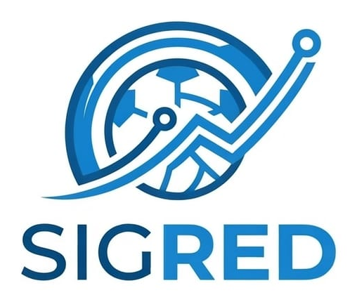

✦DTI · Grupo 09⌄

Tu proyecto, con respuestas claras.
Consulta los documentos del proyecto SIGRED, explora sus indicadores y plantea decisiones de PMO. El asistente distingue información verificada, avances del prototipo y escenarios proyectados.
✦
Dirección de Tecnologías de Información · Grupo 09Docente: Dra. Ing. Rosa Peregrina Gonzales Martínez · Selecciona «DTI · Grupo 09» en la parte superior para ver al equipo completo.
Consultas PMO · tres dominios
Selecciona un dominio y elige una pregunta para analizarla con Gemini y las fuentes del proyecto.
Evaluación oficial · CP-01 a CP-05
Ejecuta cada caso y conserva una captura auténtica de la respuesta. Una abstención con evidencia insuficiente puede ser correcta.
Memoria local activada· Informe consolidado de 88 páginas + 4 documentos RAG oficiales · El asistente puede cometer errores; verifica las fuentes.